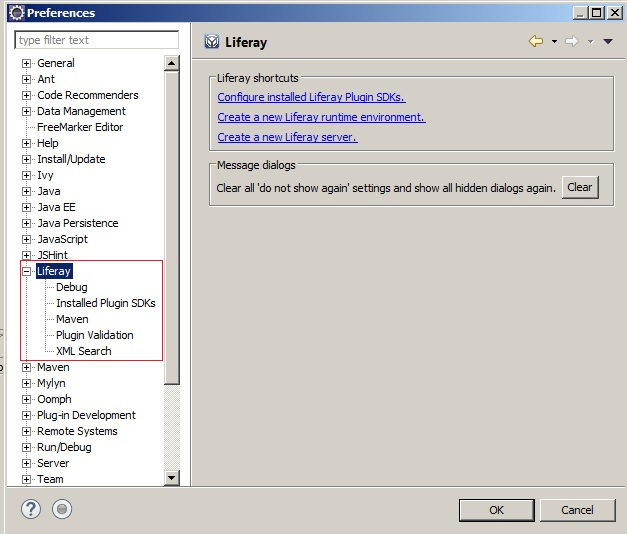
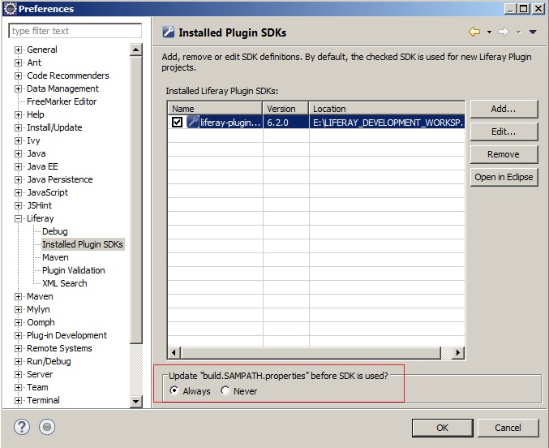
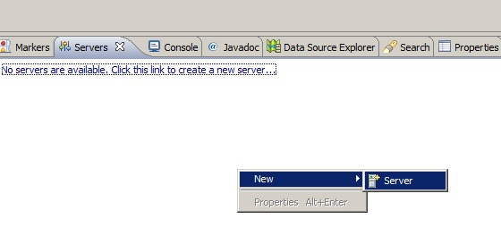
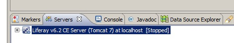
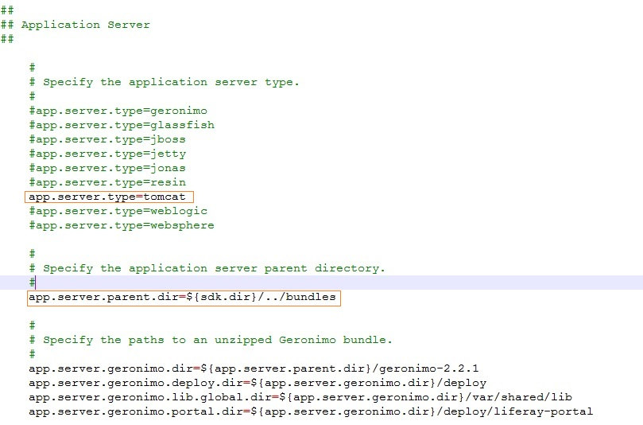
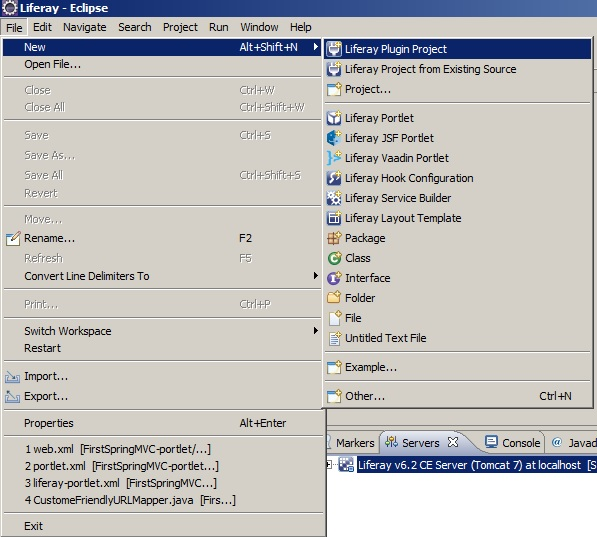

(1) Download the Liferay Portal 6.2 or greater (select tomcat bundled) ~281MB
reference :
https://www.liferay.com/downloads/liferay-portal/available-releases
(2) Download the Liferay SDK 6.2 or greater ~3MB
reference :
https://www.liferay.com/downloads/liferay-portal/available-releases
, http://sourceforge.net/projects/lportal/files/Liferay Portal/6.2.4 GA5/liferay-plugins-sdk-6.2-ce-ga5-20151118111117117.zip/download
(3) Create Liferay development workspace folder and Unzip all the files into the workspace
(4) Rename the liferay-portal-6.2-ce-ga4 server folder to bundles
(5) Setup the necessary paths and configurations in liferay-portal-6.2-ce-ga4 (bundles) server (Read more ... )
(6) Setting up Eclipse.
Download and install the Liferay IDE plugin for Eclipse or directly use the Liferay IDE
https://www.liferay.com/downloads/liferay-projects/liferay-ide
(7) Import Liferay SDK. (Window -> Preferences -> Liferay)



(8)Import the Liferay server





(9)Add following changes in Liferay Plugin SDK build.«user account profile name».properties file
E.g. build.SAMPATH.properties

(10)Make sure following changes are available in the build.properties file 
(11)Now you can start Liferay Plugin development in Eclipse
